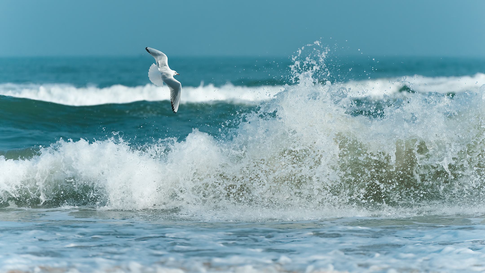
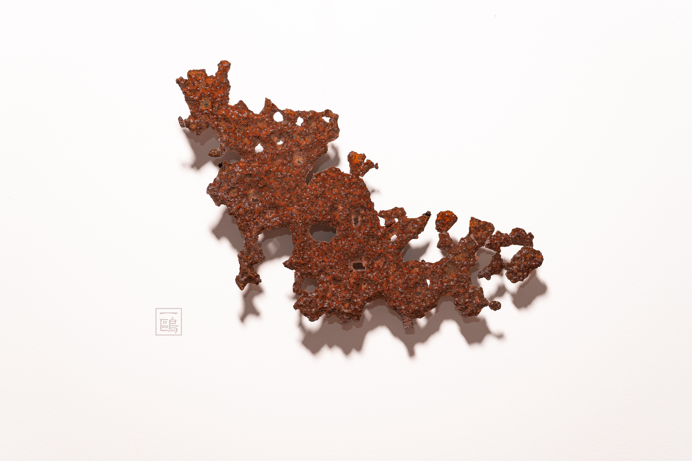

夏诺多吉雪山 · E.O 摄影
01 / 探索
这里收集我在摄影、旅行、文字和 AI 工坊创作中的作品与思考。它不追赶热点，也不急于完成；只希望每一次更新，都让这个空间更完整一些。

01摄影摄影作品与器材评论 02旅行道路、城市与途中见闻
03文字诗词、随笔与读书笔记
04AI工坊实习AI：影像生成和编程
02旅行道路、城市与途中见闻
03文字诗词、随笔与读书笔记
04AI工坊实习AI：影像生成和编程
02 / 现在
